README 的道术¶
以 TM 为例
1 项目名称¶
图 1-1
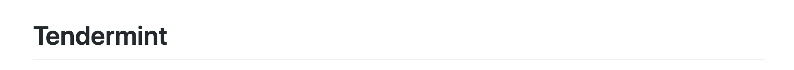
2 相关重要概念的解释¶
2.1 道¶
图 1-2
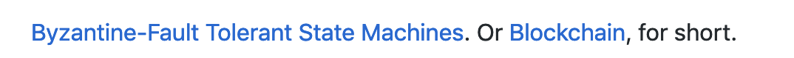
图 1-2 中 Byzantine-Fault Tolerant State Machines Blockchain 这几个 TM 中涉及到的重要概念都直接链接到了 wiki
2.2 术¶
markdown 链接
代码 1-1
1 | [Byzantine-Fault Tolerant](https://en.wikipedia.org/wiki/Byzantine_fault_tolerance) |
图 1-3
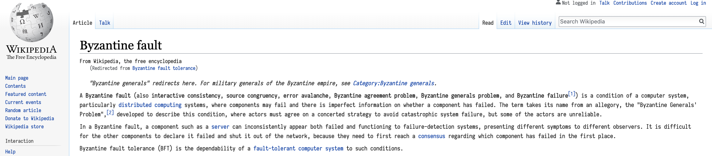
图 1-3 显示了 拜占庭容错 的 wiki
3 Badge¶
3.1 道¶
图 1-4
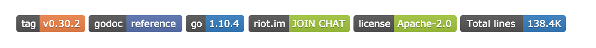
图 1-4 中有若干标签，这些标签简明扼要的给出了一些信息。版本，文档，语言，论坛，许可证，代码。其他的项目也可能别的标签，比如编译。
3.2 术¶
代码 1-2
1 | [](https://github.com/moovweb/gvm) |
代码 1-2 给出了  的实现方式，是 链接嵌套图片。
的实现方式，是 链接嵌套图片。
-
链接的地址是 gvm 项目 (一个允许多个不同版本的 golang 同时存在，能自由切换的工具)，显示的是一个 svg 图片
-
svg 图片的生成多使用 shields.io
3.2.1 shields.io 的简单使用¶
https://img.shields.io/badge/ 后面跟 name-value-color.svg
不用事先生成，可直接使用
4 测试情况¶
4.1 道¶
图 1-5
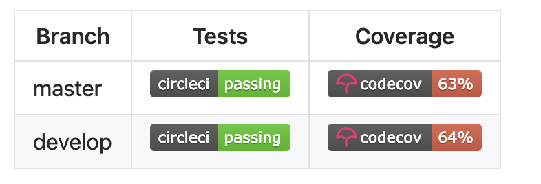
图 1-5 给出了不同分支的测试及覆盖率情况
4.2 术¶
5 概要描述¶
5.1 道¶
图 1-6
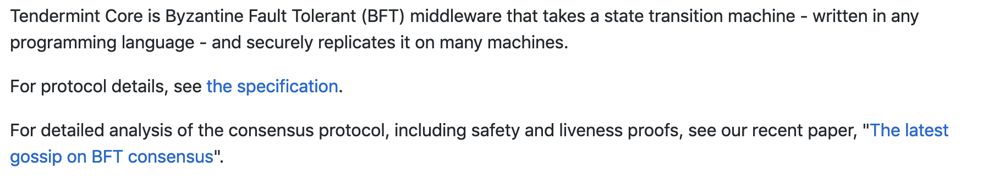
图 1-6 对项目进行简短的描述
5.2 术¶
- 几句话说出 这个项目是什么
- 相关的重要概念或内容可以给出链接
6 插入的重要说明¶
6.1 道¶
图 1-7
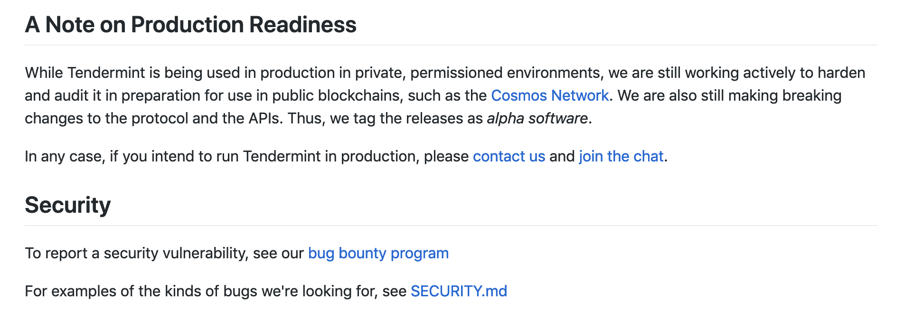
图 1-7 中的两个说明应该是 TM 项目比较重视的两点，不具有共性。
6.2 术¶
根据项目特点，把比较重要的，想要强调的部分放在靠前的位置。
7 项目依赖¶
7.1 道¶
图 1-8
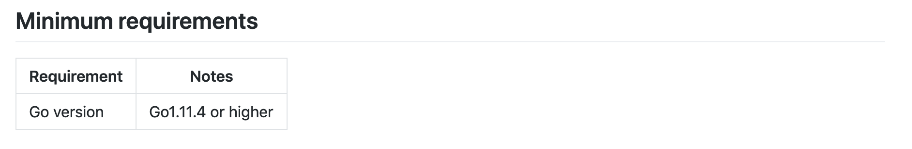
图 1-8 给出了项目的依赖，让读者可以明确项目使用的 环境，语言，库 及其版本的信息。
7.2 术¶
表格的方式给出
8 文档¶
8.1 道¶
图 1-9
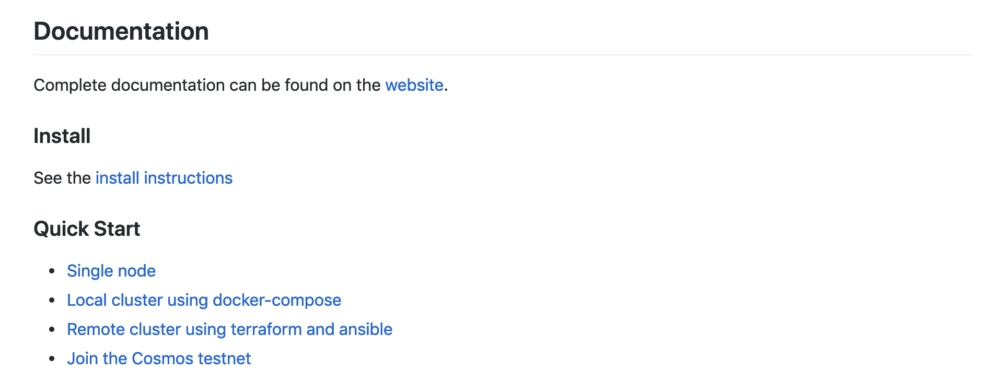
图 1-9 给出了文档的相关信息。这里是读者了解项目最重要的地方。它分成了三个部分:
-
website 是完整文档
-
Install 给出安装说明
-
Quick Start 给出了使用示例
8.1 术¶
8.1.1 website¶
TM 的这个 website 是用 VuePress 做的，把 markdown 文档编译成了静态网站，这一点跟 MkDocs 很像。Github Pages 是 github 提供的一种展示文档的方式，可以把编译好的静态网站宿主在上面，但是要求 项目必须是 public 的
展示大量信息的另一种方式是 github 的 wiki，wiki 跟项目不在同一个 repository，需要单独维护。跟 website 相比，readme, wiki 的缺点是 只支持最基本的 markdown 语法，而 website，比如 MkDocs 就支持插件，如 mermaid，plantuml, admonition 等一系列插件，更方便文档的维护，也使得文档的表现力更强。
图 1-10
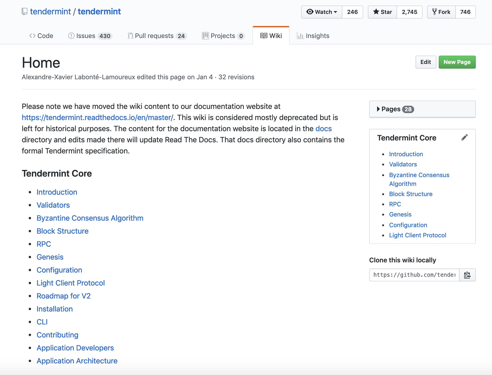
图 1-10 是 TM 的 wiki
图 1-11
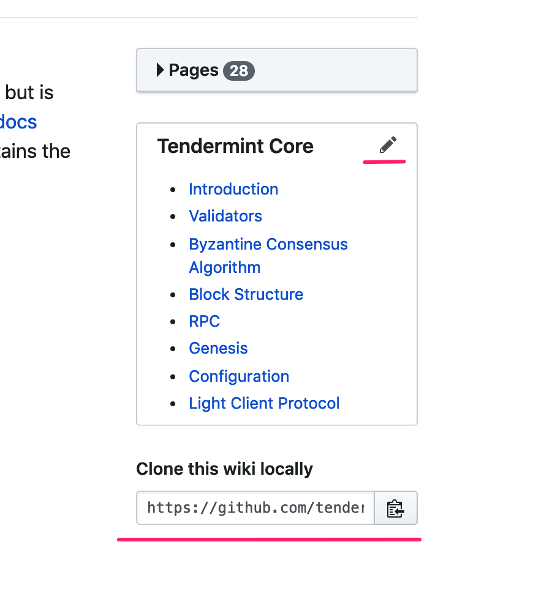
图 1-11 显示了 wiki 可以 在线编辑，也可以 本地编辑
从地址 https://github.com/tendermint/tendermint.wiki.git 可看出 wiki 与 TM 项目分属于不同 repository
wiki 与 website 的区别
-
wiki 中的流程图，时序图，干特图 只能放图片，如果有改动，只能重新结截图; website 的各种图由插件生成，有专门的 markdown 语法，修改起来方便
-
wiki 样式相对固定; website 的样式相对灵活
-
wiki 简单易用; website 门槛略高，需要学习工具的使用。
8.1.2 Install¶
Install instructions 链接到了另一个文件， 里面介绍了: 如何安装，如何运行，如何重装 等信息。文内有相关说明及示例代码。
8.1.3 Quick Start¶
Quick Start 给出了 4 个链接，指向了 4 个不同位置。前 3 个指向了文件，最后一个指向了 Cosmos 的文档。
9 贡献¶
图 1-12
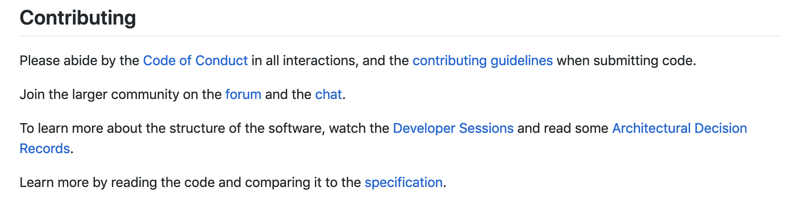
图 1-12 主要是介绍如何参与项目。这一段虽短，但给出了多个链接:
-
Code of Conduct 是行为规范
-
contributing guidelines 是参与流程
-
forum 和 chat 是贡献者之前的沟通方式
-
Develper Sessions 是放到 youtube 上的视频 (没看内容)
-
Architetural Decision Records 是架构设计
-
specification 是整个代码结构说明
10 版本¶
图 1-13

图 1-13 给出了项目更新与版本号的关系。TM 像很多项目一样，也使用了 Semantic Versioning
打开链接，可以看到
图 1-14
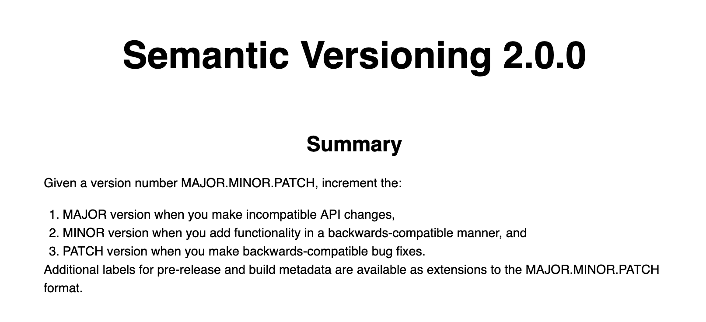
图 1-14 给出了版本号定义的基本规则
11 资源¶
图 1-15
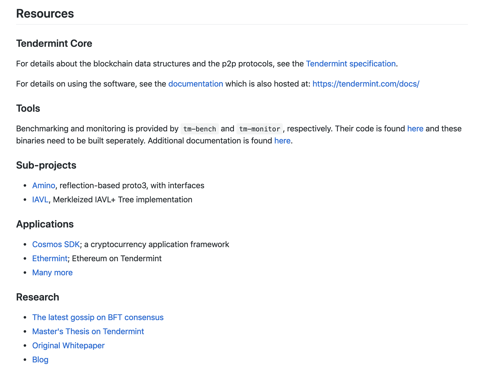
图 1-15 给出了其他相关的一些信息。算是一些补充。
会议记要¶
3 Badge
tag, go, python, license 必须有，godoc 争取有; badge 可以没有链接
4 测试
至少两个分支，可以没有链接，数据由 台帅 给出
5 概要描述
可以链接到 白皮书
6 插入的重要说明
-
统一联系方式
-
bug 提交方式，邮件
-
简要说明，用户有哪些限制
7 项目依赖
操作系统，语言，库 都要写
8 文档
-
website 可以没有，或链接到 documentation 项目 (飞哥提出)
-
Install 必须要有
-
Quick Start 必须要有，不必复杂
-
操作系统可以先只写一种，比如 mac
9 贡献
- 开发者指南 有统一模板
- 架构设计 要说明原理
11 资源
统一链接到 白皮书 等资源，资源由 明哥 给出